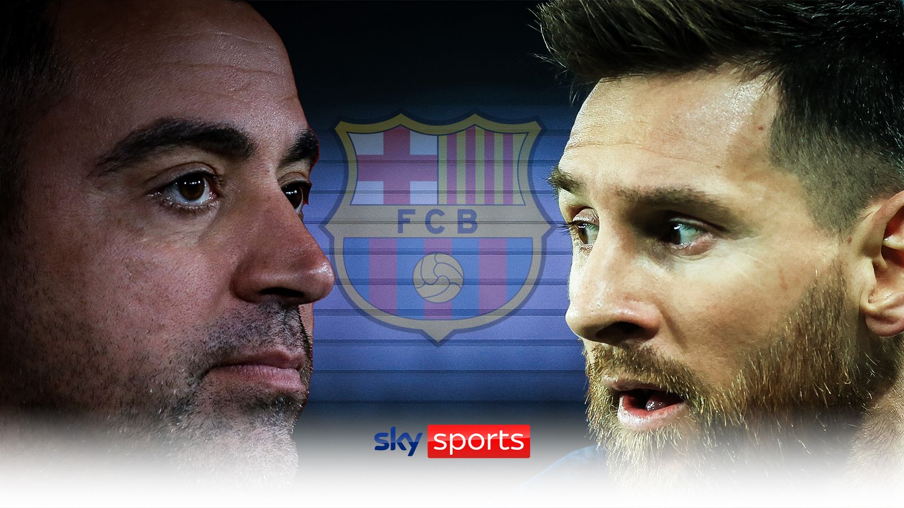

News revealed earlier this month that Messi is set to leave current club
Paris Saint-Germain at the end of his contract, with Barcelona president
Joan Laporta admitting that the club are looking into bringing the him
back.Messi, who scored 672 goals in 778 appearances for Barca between 2003
and 2021, has spent the last two seasons at PSG after Barcelona let him
move for a free due to being unable to renew his contract.Asked about the
impact Messi would have on this Barcelona team, who won the LaLiga title
this season, Xavi told Barcelona-based newspaper SPORT: "I'm in no doubt
that if Messi were to return, he would help us in what we are wanting to
achieve with our football. "I am in no doubt and I've told this to the
president. He continues to be a determined footballer, he has the hunger
still."I am in no doubt and I've told this to the president. He continues
to be a determined footballer, he has the hunger still."He's still a
winner, he's a leader and he's different. At Barcelona, we've not have the
same level since what we reached as a pinnacle in 2010. Messi's
representatives were in talks about a contract renewal with PSG and
everything was looking positive during the World Cup in Qatar but the
dynamic changed and his departure from Paris suits all parties. PSG
consider the move to sign Messi as a free agent in the summer of 2021 to
have been a success on and off the pitch, but sections of the club's fans
have turned on the player since they were knocked out of the Champions
League by Bayern Munich last month.Messi still believes that he can play
at the highest level in Europe and Barcelona have made no secret of their
desire to re-sign him this summer. It remains to be seen whether they can
afford to offer him a new contract but he is much more likely to stay in
Europe than move to Inter Miami - or any other MLS club - or Saudi Arabia
at this stage of his career.